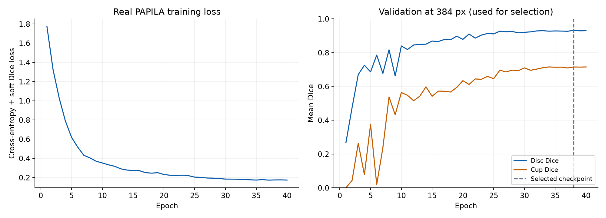
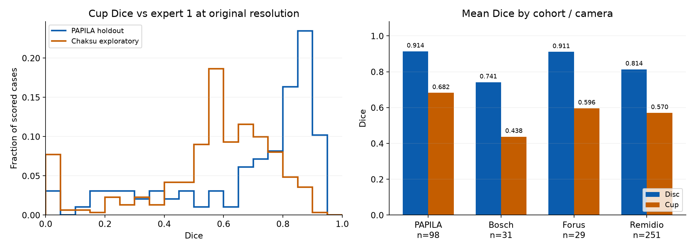

HyunOptic 실데이터 학습 및 모델 성능
2026-10-25T11:03:56.109163+09:00 · 단일 U-Net 기준 실험 · 병합된 PR #1
공식 원본으로 실제 학습·평가한 결과입니다. PAPILA는 환자 단위 내부 홀드아웃이며, Chákṣu는 탐색적 외부 평가입니다. 전문가 윤곽과의 분할 일치도를 측정했고 녹내장 진단 정확도나 임상 유효성을 측정하지 않았습니다.
공개 자료와 무결성
원본 이미지·환자별 결과·모델 가중치는 이 공유용 묶음에 포함하지 않았습니다. 공식 메타데이터와 다운로드 provenance JSON에 정확한 파일 ID·버전·크기·해시를 보존했습니다.
학습과 체크포인트 선택
Expert 1만 학습 타깃으로 사용했습니다. 동일 환자의 양안을 같은 분할에 유지하고, 검증셋 평균 disc/cup Dice로 체크포인트를 선택한 후 내부 홀드아웃을 한 번 평가했습니다. 검증 곡선은 384픽셀 모델 격자, 아래 평가 지표는 원본 이미지 좌표계에서 계산했습니다.

실데이터 성능
Dice는 범위가 0~1인 겹침 지표입니다. vCDR 오차는 비율의 절대 차이입니다. vCDR이 정의되지 않는 예측은 오차 분모에서 빠지므로 전체 수·Dice 수·vCDR 수·실패 수를 함께 표시했습니다. 실패를 숨겨 전체 데이터의 성능으로 표시하지 않습니다.

내부 평가의 환자 단위 구간
양안을 함께 묶어 환자를 2,000회 재표집했습니다. 이 코호트의 환자 가중 평균 구간이며 개인의 진단 불확실성이 아닙니다. Chákṣu는 환자 연결을 충분히 확인할 수 없어 환자 단위 구간을 만들지 않았습니다.
외부 카메라별 탐색적 결과
원본 Test의 5인 마스크 사전검사 완료 여부: False. 검사 수 336, 5인 마스크 판독 가능 311, 오류/해상도 플래그 26. 구조적으로 읽을 수 있다는 사실은 임상적 정답성을 보증하지 않습니다.
공식 ZIP의 macOS 메타데이터 3,971개(가짜 영상으로 집계되던 sidecar 295개 포함)를 제외하도록 PR #2에서 파서를 수정했습니다. 수정 전후 평가 대상 336장의 파일·마스크 목록이 동일함을 확인했습니다. 실제 마스크 포함관계 검사 기준은 유지했습니다.
참조자 민감도와 실패
내부 Expert 1 ↔ Expert 2의 평균 disc Dice 0.9317, cup Dice 0.8220, 평균 |vCDR 차이| 0.0369. 판독자 간 일치는 맥락 자료이며 모델 성능의 상한선이 아닙니다.
해석의 한계
- 한 번의 실데이터 기준 실험입니다. 내부 홀드아웃을 본 뒤 설정이나 모델을 다시 고르지 않았습니다. 임상 안전성·질환 분류·우월성을 입증하지 않습니다.
- Chákṣu는 기존 연구 프로토콜에서 이미 다루던 자료이므로 독립된 미노출 확증 자료로 주장하지 않습니다. 데이터·촬영 장치·참조 윤곽 정의의 차이가 있습니다.
- GPU 학습에서 nll_loss2d의 결정론적 구현 부재 경고가 발생했습니다. seed와 환경을 기록했지만 비트 단위 동일 재현성은 입증하지 않았습니다.
재현과 수집 파일
명령과 설정은 protocol.json·config.json·bundle_manifest.json에, 학습 기록은 history.json에, 정확한 결과는 internal_model_eval_aggregate.json·external_model_eval_aggregate.json·metrics.csv에 보존했습니다. 원본을 이용 조건에 따라 별도로 확보한 뒤 동일 커밋과 환경에서 재현하십시오.
CSV 성능표 · JSON 요약 · 실험 프로토콜 · 파일 SHA-256 목록